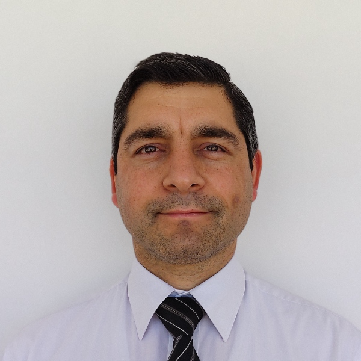

Pablo Heredia | WDD 130
Hi!, I am pablo heredia, a student of wdd 130 in BYU-IDAHO, and I love programing and developing Electronic Devices. from my youth I experienced programming, I really like it. I fount that I can create a lot of things virtually.... I also like teaching to hight school students, subjets like Computer, programming, electronics, leadership , etc. these are my prefered subjets. I also like to apply for a job that includes one or more of the subjets listed before. I think that I could be a good option for enterprises to join to a work team for doing some challeng task.